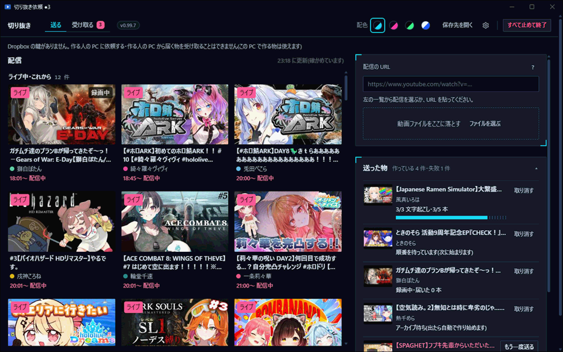
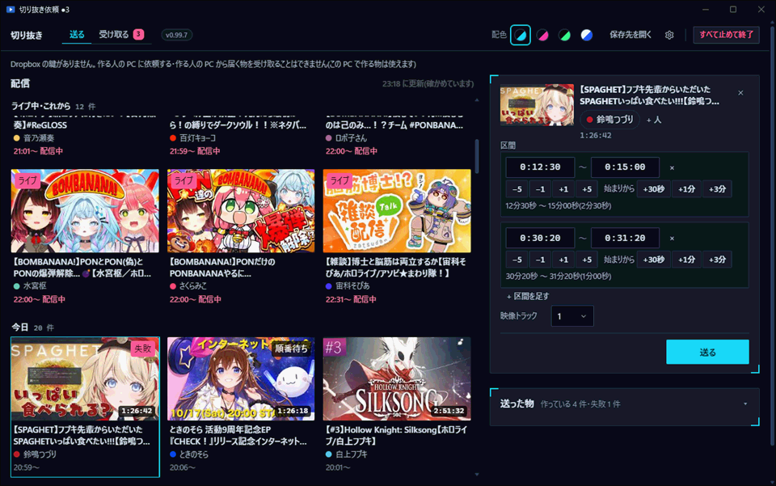
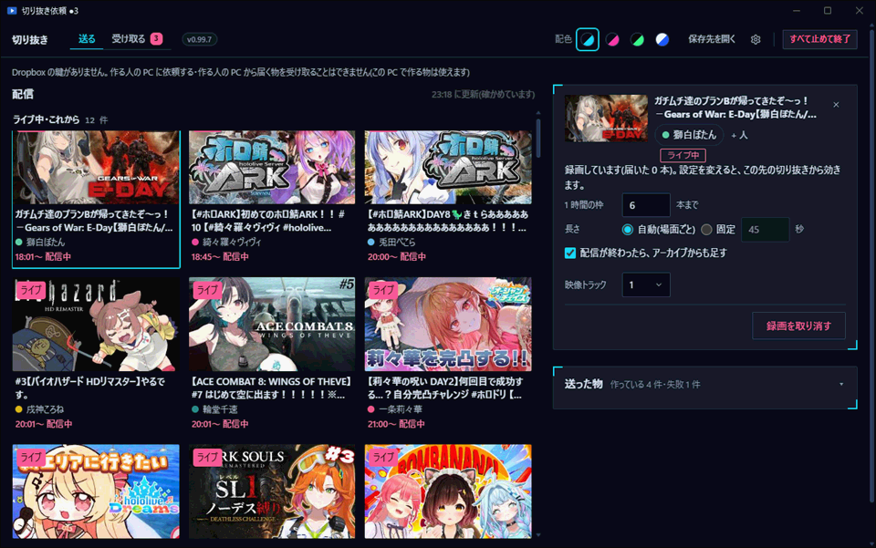
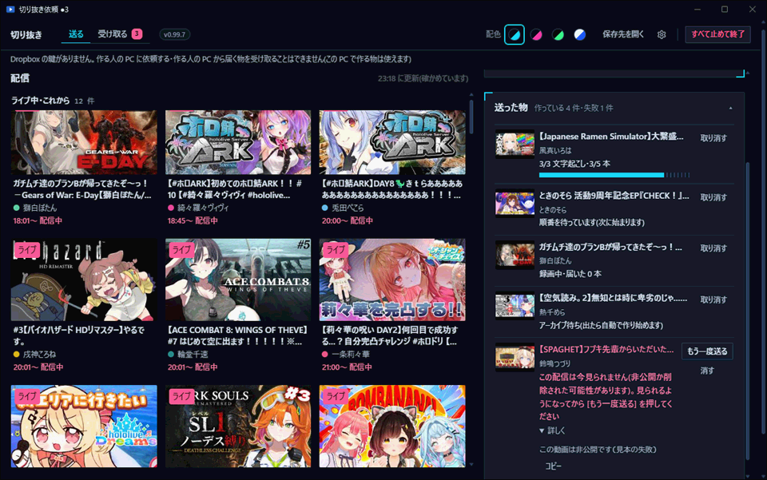
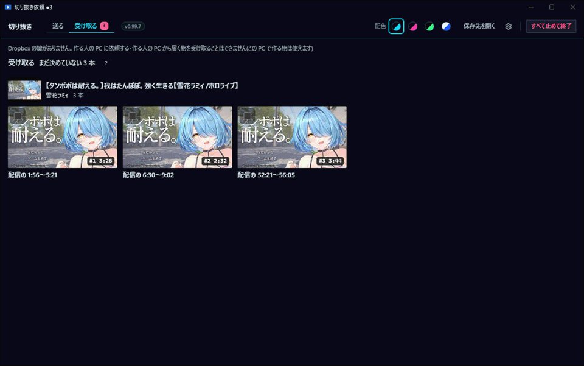
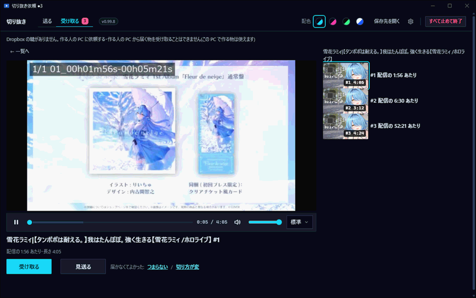
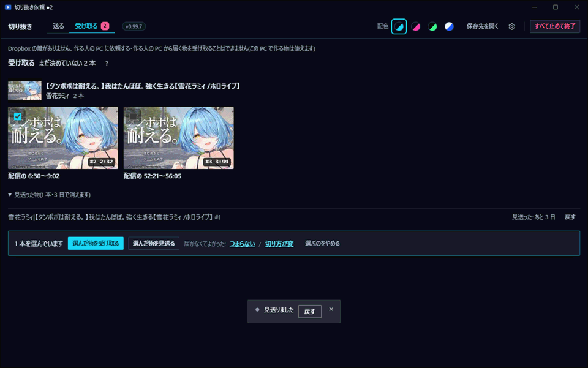
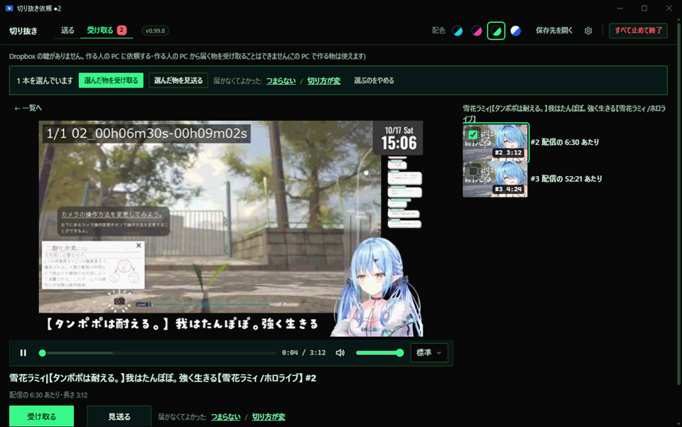

使い方
配信を選んで送ると、切り抜きが作られて「受け取る」に届きます。気に入った物を [受け取る] で保存先に入れる、というアプリです。 ボタンの名前は [送る] のように書いています。画像は実際の画面です。
1. 送る
上の [送る] の画面です。左に配信の一覧、右に送る欄と「送った物」が並びます。

配信を決める(3 とおり)
- 一覧から選ぶ: 左の一覧のカードを押すと、右の送る欄にその配信が入ります。一覧の[更新]で新しくなります。
- URL を貼る: 「配信の URL」の欄に貼ります。一覧にある配信なら、そのカードが選ばれます。どこでも Ctrl + V で貼れます。
- 動画ファイルを落とす: パソコンの動画を「動画ファイルをここに落とす」へ落とすか、[ファイルを選ぶ] で選びます。 この場合は区間も本数もありません。選んだ動画から切り抜きを作ります。
送る欄の右上の × か Esc で、選んだ配信を閉じられます(入れかけも消えます)。 [送る] と [受け取る] を行き来しても、入れかけはアプリを閉じるまで残ります。
終わった配信の区間と本数

- 区間: 切り抜きたい所の「始まり」と「終わり」を入れます。入れなくても使えます。 [+ 区間を足す] で足せます(5 つまで)。区間の数だけ切り抜きができます。
- 時刻の入れ方: 数字だけ打てば入ります(たとえば 1230 で 12 分 30 秒)。欄の上でマウスのホイールを回しても変えられます。 Enter で次の欄へ進みます。
- ボタンで動かす: [−5] [−1] [+1] [+5] は秒を動かします。[+30秒] [+1分] [+3分] は「始まり」から数えた長さです。 終わりの時刻がそのぶん動きます。
- 本数: 区間を入れないときに、見どころを自動で探して切る本数です。[−] [+] で変えます(1〜30)。
- 配信者の札: 配信者の名前は自動で入ります。違うときは札を押して直せます。 コラボのときは [+ 人] で相手を足します。
- 映像トラック: 動画編集ソフトに並べる映像の数です。よく分からなければ、そのままで大丈夫です。
最後に [送る] を押します。押すと「送った物」に行が足されます。続けて別の配信も送れます。
ライブ・予約・アーカイブ待ち

- 配信中: 一覧の「ライブ」の配信を選ぶと、ボタンが [録画を頼む] になります。配信が終わるまで録画し、面白い所を自動で切ります。 できた分から「受け取る」に届きます。
- これから始まる配信: ボタンが [予約する] になります。始まると自動で録画します。
- 1 時間の枠: 1 時間の配信から切る本数の上限です。
- 長さ: 場面に合わせて自動で決めます(選ぶ所はありません)。
- 配信が終わったら、アーカイブからも足す: チェックを入れると、配信のあとにアーカイブからも切り抜きを足します。
- 録画中の設定の変更: 録画が始まってからでも変えられます。変えた設定は、そこから先の切り抜きに効きます。
- 録画をやめたいとき: [録画を取り消す] を押します。届いた物は残ります。
- 配信が終わったばかり: アーカイブがまだ見られないことがあります。そのときは「アーカイブ待ち」になり、 アーカイブが出たら自動で作り始めます。待っている間も、アプリを閉じなければそのままです。
送った物を見る

- 進み具合: 「順番を待っています」「文字起こし 3/3・3/5 本」のように、今どこまで進んだかが出ます。 録画中の行には「録画中・届いた 0 本」と出ます。
- 取り消す: 行の右の [取り消す] で止められます。確認が出ます。 すでに届いた物は「受け取る」に残り、作りかけの物は捨てられます。
- 失敗したとき: 行に理由が出ます。まず、少し待つと自動でもう一度試す場合があります。 それでも直らないときは [作る人に知らせる] を押してください。知らせたあとは、直るまで待ちます。
- [もう一度送る] で同じ内容を送り直せます。[消す] で行を消せます。[詳しく] を開くと、細かい理由が出ます([コピー] で写せます)。
2. 受け取る
[受け取る] の画面です。上の数字は、まだ決めていない本数です。

届いた切り抜きは、配信ごとの段にまとまります(新しく届いた配信が上)。 カードの番号と長さ、「配信の 1:56〜5:21」で、どこを切った物か分かります。 自動で届いた物には「自動で届いた」の印が付きます。
見て決める

カードを押すと再生画面になります。動画の下の帯で、再生・位置・音量・速さを変えられます(音量と速さは覚えます)。 キーでは Space で再生と一時停止、← → で 5 秒、↑ ↓ で音量、Esc で一覧へ戻ります。
- [受け取る]: 使う物です。保存先のフォルダへ入ります。
- [見送る]: 今回は使わない物です。一覧から消えます。
- 届かなくてよかった: 「つまらない」(場面がよくない)か「切り方が変」(始まりや終わりがおかしい)を押すと、 見送ったうえで、「よくなかった」という印が残ります。次の切り抜きをよくするために使われます。
- 決めると、自動で次の切り抜きが最初から流れます。全部決めたら一覧に戻ります。
まとめて決める・戻す

- カードの四角にチェックを入れると、下に帯が出ます。[選んだ物を受け取る] か [選んだ物を見送る] で、まとめて決められます。 [選んだ物を受け取る] は、確認が出ます。
- 戻す: 見送った直後に「見送りました [戻す]」が数秒出ます。 あとからでも、一覧の一番下の「見送った物」から 3 日の間は [戻す] で戻せます。3 日たつと消えます。 ([受け取る] を押した物は戻せません。間違えたら、保存先のフォルダで消してください。)
- 3 日で自動で見送る: 届いてから 3 日決めない物は、自動で見送りになります(理由はなし)。 PC を消していた間の分は、次に開いたときにまとめて片付き、「3 日たった n 本を片付けました」と出ます。
保存先の形
[受け取る] を押した切り抜きは、⚙ で決めた「受け取った物の保存先」へ、次の形で入ります。 入れたあと、画面の下に [フォルダを開く] が数秒出ます。上の [保存先を開く] でも開けます。
保存先 \ 配信の日付_配信者名_配信の題 \ #番号 \ の中に、切り抜きが入ります。動画編集ソフトには、そのフォルダから読み込んでください。
3. ⚙ 設定
右上の歯車(⚙)を押すと、右から設定が出ます。Esc か [閉じる] で閉じます。
- 配色: 右上の 4 つの丸で、画面の色を選べます。選んだ色は次に開いたときも使われます。この説明のページにも同じ色が付きます。

配色の例(ターミナルグリーン)。 - 処理する PC: 「この PC で処理する」か「依頼する」(作る人の PC に頼む)を選びます。初めは「この PC で処理する」です。
- YouTube のログイン: YouTube に「ロボットではないか」の確認で止められたら、[YouTube にログイン] を押し、出てきた小さな窓で Google にログインします。 済むと窓は自動で閉じ、止まっていた物は自動でやり直します。メインではなく、サブの Google アカウントでログインしてください(止められても困らないように)。 ログインの情報はこの PC の中だけに置き、外へは出しません。「ログインが切れた可能性があります」と出たら、もう一度ログインします。
- 受け取った物の保存先: [受け取る] を押した切り抜きを置く場所です。[選ぶ] でフォルダを選びます。[既定に戻す] で元の場所に戻ります。 変えても、今ある物は移しません。
- 一時保管: 作っている途中の物や録画を置く場所です。こちらも、変えても今ある物は移しません。
- 文字起こしのエンジン: この PC に合わせて自動で選びます(NVIDIA の GPU なら速い C、ほかは A)。ここでは今どちらで動いているかが見えます。
- YouTube の API キー: 配信のコメントに書かれた時刻を、見どころを探す手がかりに使います。無くても動きます(コメントを使わないだけです)。 貼って [確かめて保存] を押します。保存したキーは画面に出ません。[消す] で消せます。
- 空き容量の下限: 空きがこの GB 数より少なくなると、新しい処理を始めずに待ちます。
- カットの既定: 切り抜きの中の無音の所を削るか(「しない」か「無音を削る」)です。送るときに使います。初めは「しない」です。
- ライブの切り抜き: 感度・待ち・余白です。録画しながら切り抜くときの細かい設定で、次の録画から使います。
4. 初回の準備
初めて開いたときは、文字起こしなどに使う部品を取ってきます(約 11GB)。準備だけの画面が出て、棒で進み具合と「あと約 n 分」が見えます。
- この間も PC は使えます。準備は確認なしで自動で始まり、終わると自動で送る画面に移ります。
- 取ったあと: 道具と文字起こしが動くかを 1 回ずつ確かめます。文字起こしが A で動かなければ、自動で C(NVIDIA の GPU 用)の部品を取って確かめ直します。
- 途中で止めたとき・失敗したとき: 取れた分は残ります。次は続きから取ります。ネットを確かめて [もう一度] を押してください。
- 空き容量: 空きが足りないときは、取り始める前に止まります。空きを増やしてから [もう一度] を押してください。
- [詳しく]: 部品の名前と、それぞれの済み・今・だめが見られます。困ったときは [詳しい文をコピー] で作る人に伝えられます。
5. 閉じるとき・止めるとき
窓の × を押す、右上の [すべて止めて終了] を押す、時計の横のアイコンで「止める」を選ぶ、のどれでも同じです。
- 作業も預かりも無いとき: 確認は出ずに、すぐ閉じます。
- 作業中・預かりがあるとき: 確認が出ます。作っている数、録画中なら「録画が途中で切れます」、予約やアーカイブ待ちの数が書いてあります。
- [裏で続ける]: 窓だけ閉じて、作業と録画は続けます。全部終わると、アプリは自分で終わります。
- [止めて閉じる]: 全部止めて閉じます。
- 止めても、作っている途中の物は消えません。次に開くと、黙って続きから作ります。できた物は、必ず「受け取る」に届きます。
- 裏で続けている間に切り抜きが届いても、通知は出ません。時計の横のアイコンにマウスを乗せると、「作っています 2 件・録画中 1 件」のように今の様子が見えます。 押すと窓がまた開きます。
- PC を消していて予約の録画ができなかったときは、次に開いたときにそう知らせます。